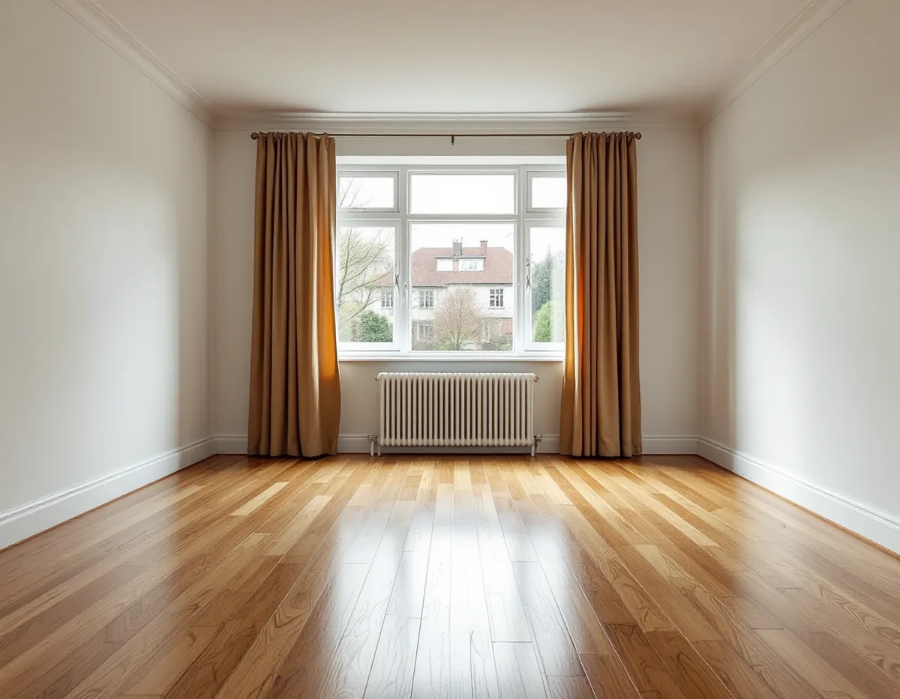
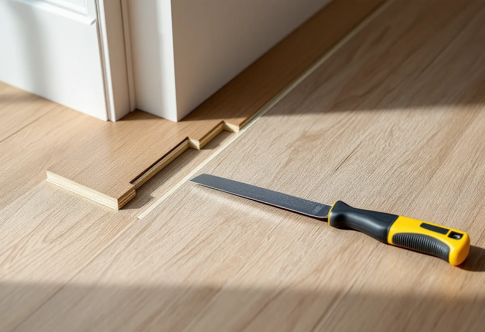

Platsbesök
Vi tar reda på om golvet är massivt, lamell eller något annat.
Innan ett golv slipas måste man veta vad det är. Ett massivt trägolv kan slipas om många gånger, en lamellparkett så länge toppskiktet räcker, och vissa golv som ser ut som trä går inte att slipa alls. Geal Entreprenad AB slipar och ytbehandlar trägolv i villor och radhus i Sollentuna och börjar med att ta reda på vilket golv du har.

Sollentunas översiktsplan beskriver hur man i början av 1900-talet började bygga småhus och villor och hur flera miljonprogramsområden uppfördes under perioden 1965–75. Planen vill bevara den prägel av villastad som växte fram under 1900-talets första hälft. Sollentuna blev köping 1944, och kommunen bildades 1971.
Golven i kommunen kommer alltså från helt olika tider. I ett äldre hus kan det ligga massiva brädor eller stavparkett som har slipats förut, i ett yngre hus en flerskiktsparkett som har lagts flytande. Vi lyfter en list eller tittar i en springa för att se vad som faktiskt ligger där.

Ett massivt trägolv består enligt Golvbranschen genomgående av samma träslag, och hit räknas bland annat kortstavsparkett, brädor av barr- och lövträ och mosaikparkett. Ett sådant golv har lång livslängd och kan renoveras genom omslipning ett flertal gånger. Gränsen går vid tjockleken mellan ytan och not och spår.
Massiva golv kan också levereras färdigbehandlade från fabrik, lackade med UV-härdad lack eller naturoljade. Slipas ett fabriksbehandlat golv försvinner den ytan, och det nya skiktet stryks på plats. Golvbranschen rekommenderar att rumstemperaturen hålls inom cirka 15–25 grader och den relativa fuktigheten mellan 30 och 60 procent, och avråder från våta rengöringsmetoder. Det skonar både ett massivt golv och limfogarna i en lamellparkett.
Lamellparkett, eller flerskiktsparkett, består enligt standarden SS-EN 13489 av två eller flera träbaserade skikt där det översta är massivt trä på minst 2,5 millimeter. Golvet är oftast 12–15 millimeter tjockt totalt och läggs normalt flytande. Det går att renovera genom omslipning så länge toppskiktet räcker.
Riktlinjerna SLIP 22 varnar för material som är förvillande lika ett slipbart trägolv men inte går att slipa: laminat, golv med ett slitskikt tunnare än en millimeter och fabrikslackerade trägolv som är EB-härdade. Vid osäkerhet kontrolleras slitskiktet med en kniv i en springa i ett hörn av rummet, och har slitskiktet lossnat på enstaka ställen ska det limmas ner före slipningen.
Är lacken från fabrik och har bara ytliga repor kan en så kallad refresher enligt golvtillverkarens rekommendation räcka. Ett UV-oljat golv behöver enligt Golvbranschen normalt inget periodiskt underhåll förrän efter flera års användning i rum med lätt belastning.
Vid slipning av lamellparkett finns enligt SLIP 22 en generell risk för stavsläpp, alltså att slitskiktet släpper från skiktet under, och golventreprenören ska upplysa dig som konsument om det. Golvbranschen skriver att limfogen sannolikt blir spröd med åren, att för stora fuktrörelser och för våta städmetoder kan bidra och att vibrationerna från slipningen kan få en sådan limfog att brista.
Det går inte att förutse. Även ett golv som ligger slätt kan ha slitskikt som lossnar vid omslipning och lackering, ibland flera månader efter renoveringen. Den vanligaste formen är att några få stavar släpper, och de kan oftast limmas tillbaka, men i enstaka fall kan hela golvet haverera och behöver då bytas. Är golvet vattenskadat bör du enligt riktlinjerna avrådas från en omslipning.
Ska golvet bytas, eller vill du lägga samma golv genom hela bottenplanet i radhuset, finns mer under golvläggare i Sollentuna. En översikt av golvtyperna finns på sidan om golvläggning.
Vi tar reda på om golvet är massivt, lamell eller något annat.
Är golvet en lamellparkett får du information om stavsläpp innan något bestäms.
Slipning eller underhåll, ytbehandling och eventuell limning av stavar står specificerat.
Lösa slitskikt limmas ner, och lister och spikar tas bort där det behövs.
Grov-, mellan- och finslipning efter hur mycket trä som finns att ta av.
Lack eller olja enligt leverantörens anvisning och en genomgång av skötseln.
Att slipa golv och att byta en plastmatta mot trägolv är båda rotarbeten i ett småhus enligt Skatteverket. Avdraget gäller arbetskostnaden, inte material eller resor.
Det är 30 procent av arbetskostnaden, högst 50 000 kr per person och år och högst 75 000 kr tillsammans med rutavdrag. Geal drar avdraget direkt på fakturan.
Golvtypen, ytan, om lösa stavar behöver limmas och vilken ytbehandling du väljer betyder mest. Efter ett gratis platsbesök får du ett skriftligt kostnadsförslag.
Parkett, trägolv, klinker och slipning.
Golvläggning i Stockholm →Takbyte, takbesiktning och plåtarbeten.
Takläggare i Sollentuna →Norrviken, Tureberg och Edsberg.
Takrenovering i Sollentuna →Tillbyggnad, tomtdelning och lov.
Byggföretag i Sollentuna →Buller, ljudglas och radhus i Sollentuna.
Fönsterbyte i Sollentuna →Radhus i Sjöberg och villor nära stationerna.
Golvläggare i Sollentuna →Villastad, radhus och ventilationen.
Badrumsrenovering i Sollentuna →Villor och radhus i Sollentuna.
Fasadrenovering i Sollentuna →Villastad och radhuslängor.
Köksrenovering i Sollentuna →Villor och radhus i Sollentuna.
Målare i Sollentuna →Radhusplåt, bleck och rännor i Sollentuna.
Plåtslagare i Sollentuna →Altaner, uterum och bryggor.
Snickare i Sollentuna →Ansökan, solceller och radhus.
Takbyte i Sollentuna →På höjden, nya byggregler och ritningar.
Tillbyggnad i Sollentuna →